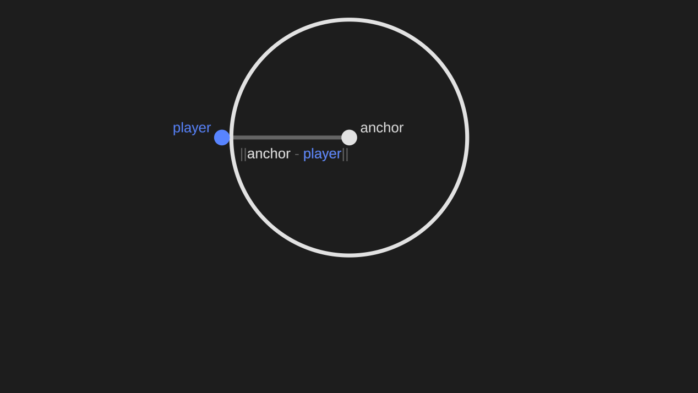
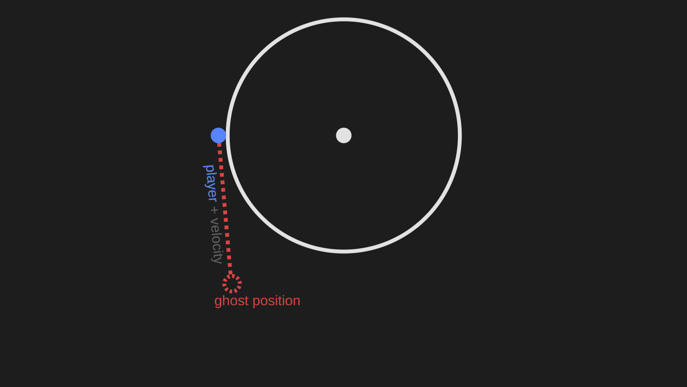
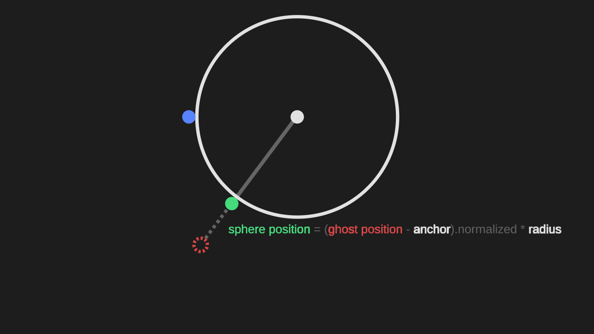
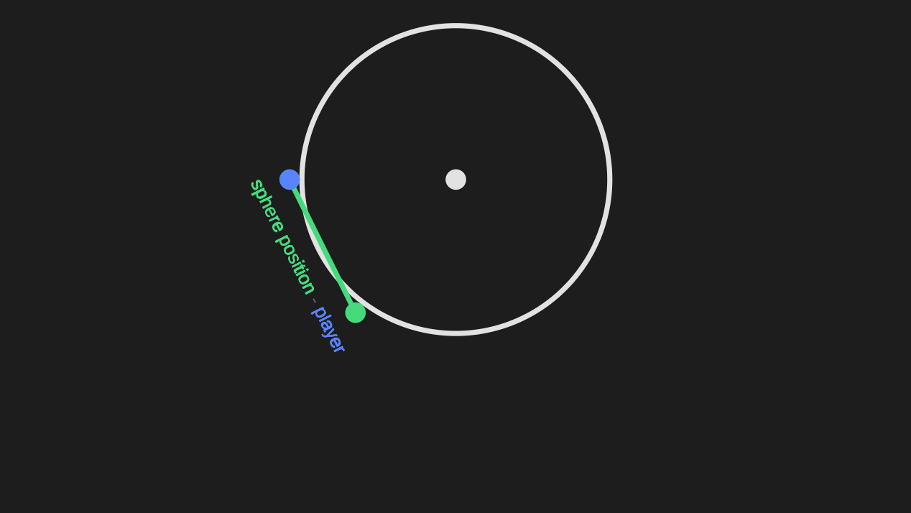

Croak and Dagger
Croak and Dagger is a hack n' slash game currently in development by a team of students at the Rochester Institute of Technology. I joined this team for one semester, during which my main contribution was the development of a swing mechanic.
The core idea behind the swing is to define a sphere encompassing the area in which the player could swing, then move the player along the surface of that sphere until they cancel the swing.

First I define the sphere. The function takes in a vector called the anchor, which is the point in 3D space from which the player decided to swing. This anchor becomes the center the sphere, and the sphere's radius is equal to the distance between the anchor and the player.
Now I add the player's velocity to their position to find where they would be if they weren't swinging. This is called the ghost position because the player won't actually be moved here. Instead, the ghost position will be used to find where on the sphere the player should be moved to.
This point, called the sphere position, can be calculated by finding the vector from the anchor to the ghost position, normalizing it, then multiplying the normalized vector by the radius of the sphere.
Finally, I can calculate a new velocity that accounts for the swing by finding the vector from the player's current position to the sphere position. The player moves using this new velocity.

The entire swing mechanic then functions by repeating this loop until the swing gets cancelled.
1. find the ghost position
2. find the sphere point
3. update the player's velocity
4. move the player